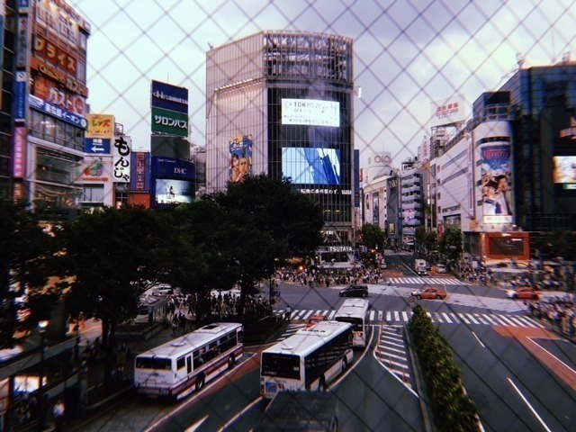
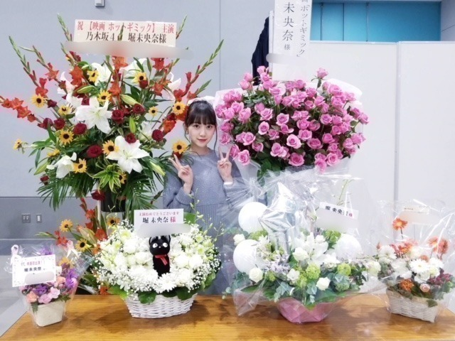
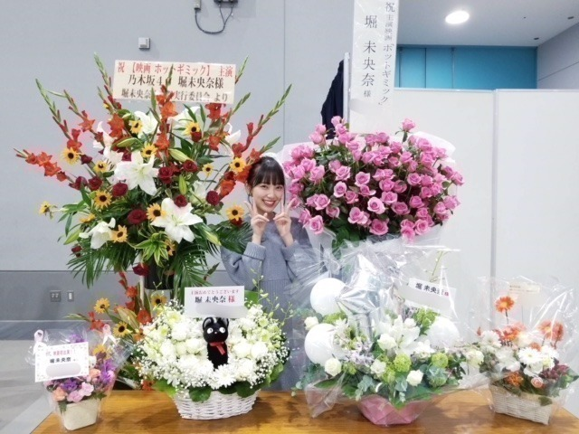
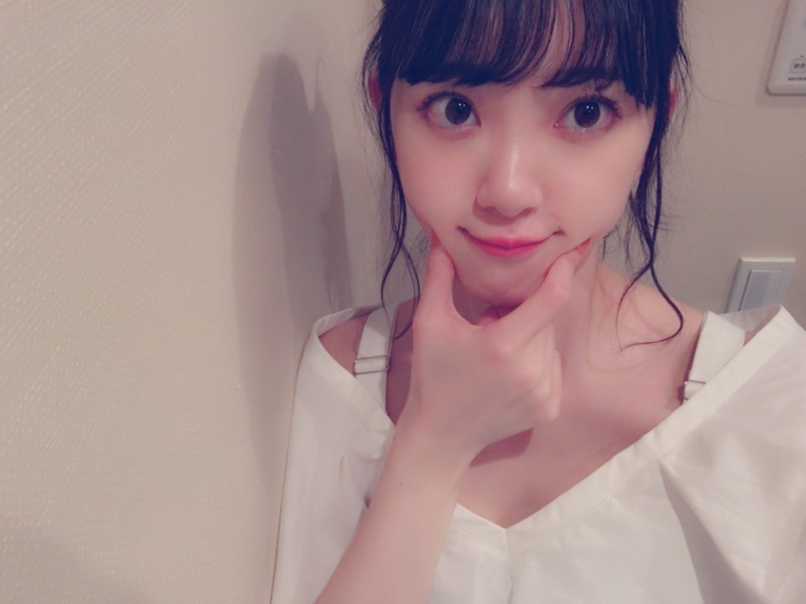

2018/1005Friふとしたとき
最近よく聴く
チャットモンチーさん。
絶妙な歌詞とメロディが癖になります。
女子は特に好きな世界観ですよね！
染まるよ
真夜中遊園地
恋の煙
バスロマンス
例えば、
が好き

渋谷
握手会ブースに祝花！
嬉しい ありがとうございます！


前回の自己紹介ブログ
どうでしたか？

メイクやヘアなど女の子向けブログも
今、書いてます〜
質問あれば、何でもこちらにどうぞ。
このポーズ自分の中で
はまってるみたい。笑
なんかじわじわ
では！
2018/10/05 15:36
コメント(666)
みおなちゃん更新ありがとう╰(*´︶`*)╯♡
チャットモンチーさん良い歌ですね（╹◡╹）♡
祝花綺麗ですねー(*´꒳`*)
自己紹介ブログ良きでした･:*+.\(( °ω° ))/.:+
たまにして欲しいです♪(๑ᴖ◡ᴖ๑)♪
顔ムギュってするポーズ可愛い
チャットモンチーさん良い歌ですね（╹◡╹）♡
祝花綺麗ですねー(*´꒳`*)
自己紹介ブログ良きでした･:*+.\(( °ω° ))/.:+
たまにして欲しいです♪(๑ᴖ◡ᴖ๑)♪
顔ムギュってするポーズ可愛い
みおなちゃんおつかれさまでした。
昔は真っ黒だったってなんかで言ってたけど、どうやって美白になったんですか？日頃やってることとかあったら知りたいです！
いつもブログありがとう！
写メのポーズすごく可愛い！癒しです！笑
私も考え事してる時に同じポーズしてるかも笑
映画の撮影は大変だと思いますが、体調には気をつけてくださいね！
いつも元気をありがとう！
写メのポーズすごく可愛い！癒しです！笑
私も考え事してる時に同じポーズしてるかも笑
映画の撮影は大変だと思いますが、体調には気をつけてくださいね！
いつも元気をありがとう！
堀ちゃんこんばんは！
出身の岐阜県のおすすめの観光地、教えてください。
映画撮影をはじめ、仕事、大変だと思いますが、体に気を付けて頑張ってね！
おじさん、陰ながら応援してますよ～！
出身の岐阜県のおすすめの観光地、教えてください。
映画撮影をはじめ、仕事、大変だと思いますが、体に気を付けて頑張ってね！
おじさん、陰ながら応援してますよ～！
いつも使ってるメイクセットを載せて欲しいな！
いつも応援してるよ！映画の撮影で忙しいかもしれないけど頑張ってね！
ずーっと大好きだよ！！
いつも応援してるよ！映画の撮影で忙しいかもしれないけど頑張ってね！
ずーっと大好きだよ！！
ある意味これもジコチューポーズ(*´∇｀*)
こんばんは
散り椿を観てきましたよー若い観客が少なかったので..若い人にも観て欲しい作品だと思いました(^^)
トュルルルルルルルルルルルーヒロシです..の音楽が劇中に流れる度に芸人のヒロシさんを思い出した。笑
今度は億男が観たい(*´ー｀*)
おやすみおなー
散り椿を観てきましたよー若い観客が少なかったので..若い人にも観て欲しい作品だと思いました(^^)
トュルルルルルルルルルルルーヒロシです..の音楽が劇中に流れる度に芸人のヒロシさんを思い出した。笑
今度は億男が観たい(*´ー｀*)
おやすみおなー
堀さん、こんばんは。
クルーレス見ましたよ。何でか覚えてないんですけどnetflixのマイリストに入ってました。歩きながら気持ちに気づく場面で買い物してるのに笑ったし、若かりしアントマンに少しテンション上がりました。wiki見たらエマの翻案とあって、ブリジット・ジョーンズの日記といい、ジェーン・オースティン恐るべしだなと思いました。
ホットギミックの撮影はそろそろ佳境でしょうか？はつみさんと過ごす時間を大切にできたらいいですね。気温は落ち着かないですが体調気をつけつつ撮影頑張ってください。いつも応援してます。明日も晴れますように。
クルーレス見ましたよ。何でか覚えてないんですけどnetflixのマイリストに入ってました。歩きながら気持ちに気づく場面で買い物してるのに笑ったし、若かりしアントマンに少しテンション上がりました。wiki見たらエマの翻案とあって、ブリジット・ジョーンズの日記といい、ジェーン・オースティン恐るべしだなと思いました。
ホットギミックの撮影はそろそろ佳境でしょうか？はつみさんと過ごす時間を大切にできたらいいですね。気温は落ち着かないですが体調気をつけつつ撮影頑張ってください。いつも応援してます。明日も晴れますように。
誰よりも高く飛べ♪でばいころまる(o_д_)ｺﾞﾛﾝ(_Д_o)ｺﾞﾛﾝ(o_д_)ｺﾞﾛﾝ(_Д_o)ｺﾞﾛﾝ
未央奈ちゃん、おはよう。
毎日、はつみだね。
いろいろ変化があるのかな？
無理し過ぎず、良い体調で過ごしてくださいね。
新曲のテレビでの披露を待ってま～す
乃木坂46と頑張ってるcuteでsmartな未央奈ちゃんを応援しています。
毎日、はつみだね。
いろいろ変化があるのかな？
無理し過ぎず、良い体調で過ごしてくださいね。
新曲のテレビでの披露を待ってま～す
乃木坂46と頑張ってるcuteでsmartな未央奈ちゃんを応援しています。
おはようございます‼︎
コメントが遅くなってしまって申し訳ありません…
チャットモンチーさん、いいですよね‼︎
半音を多用した、独特のメロディー。
デビュー当時の、思春期の研ぎ澄まされた感覚をそのまま表現したような歌詞は、すごく印象的でした。
当時自分は大阪にいて、チャットモンチーがいつも聴いていた念願のFM大阪に出演できたといって『お母さん、聴いてるーっ⁉︎』ってはしゃいでいたのを覚えています。
それから、あっという間に全国区のバンドになって。
そして、ドラムの久美子さんの脱退、えっちゃんの結婚と妊娠、そして解散。
気がつくと時間は経っていて、いろんなことが変わっていって、なんか切ないような、寂しいような。
でも、それもこの世界の常理。
未央奈が1つ前のブログで言っていたとおり、そんな多くの変化を経験することも、生きている証ですよね♪
さて、今日からぐっと秋めいてきて、過ごしやすくなってきました。
今週末、未央奈に会えるのも楽しみです…‼︎
ではでは、また。
今日も未央奈にとっていい1日になりますように♪
コメントが遅くなってしまって申し訳ありません…
チャットモンチーさん、いいですよね‼︎
半音を多用した、独特のメロディー。
デビュー当時の、思春期の研ぎ澄まされた感覚をそのまま表現したような歌詞は、すごく印象的でした。
当時自分は大阪にいて、チャットモンチーがいつも聴いていた念願のFM大阪に出演できたといって『お母さん、聴いてるーっ⁉︎』ってはしゃいでいたのを覚えています。
それから、あっという間に全国区のバンドになって。
そして、ドラムの久美子さんの脱退、えっちゃんの結婚と妊娠、そして解散。
気がつくと時間は経っていて、いろんなことが変わっていって、なんか切ないような、寂しいような。
でも、それもこの世界の常理。
未央奈が1つ前のブログで言っていたとおり、そんな多くの変化を経験することも、生きている証ですよね♪
さて、今日からぐっと秋めいてきて、過ごしやすくなってきました。
今週末、未央奈に会えるのも楽しみです…‼︎
ではでは、また。
今日も未央奈にとっていい1日になりますように♪
堀さん、こんにちは♪
チャットモンチーさんというアーティストさん
がいるのですね。
染まるよ という曲を聴きました。
大人になると一度くらいタバコを吸いたくなる。
という内容の曲でした。
シャングリラという曲は知ってました。
渋谷の写真を見ました。
渋谷は人が多いのですね。
祭りをしてるのかと思いました。
横断歩道が斜めにもありました。
最近やせるために、野球の壁当てをしてます。
昨日は２０分ぐらいかけて３００球投げ込みました。
堀さんは運動は乃木坂さんのダンスをしていますね☆
ではまたコメントしますね♪
チャットモンチーさんというアーティストさん
がいるのですね。
染まるよ という曲を聴きました。
大人になると一度くらいタバコを吸いたくなる。
という内容の曲でした。
シャングリラという曲は知ってました。
渋谷の写真を見ました。
渋谷は人が多いのですね。
祭りをしてるのかと思いました。
横断歩道が斜めにもありました。
最近やせるために、野球の壁当てをしてます。
昨日は２０分ぐらいかけて３００球投げ込みました。
堀さんは運動は乃木坂さんのダンスをしていますね☆
ではまたコメントしますね♪
堀ちゃん毎日お疲れ様です！
昨日ポートメッセ名古屋でミニリブの列に並んでから堀ちゃんの不参加を知って泣きそうでしたが、今は映画撮影を優先して頑張って欲しいので大丈夫です！
なぁちゃん推しの友人はレーンに7時間半並んで疲れ果てていましたよ。でわでわ。
昨日ポートメッセ名古屋でミニリブの列に並んでから堀ちゃんの不参加を知って泣きそうでしたが、今は映画撮影を優先して頑張って欲しいので大丈夫です！
なぁちゃん推しの友人はレーンに7時間半並んで疲れ果てていましたよ。でわでわ。
未央奈ちゃん！かわいい！弟の推しメンだよ。＊あっ、俺もか。
未央奈ちゃん！
Arty (Feat.April Bender)
Sunriseって曲があるんだけど、なんか未央奈ちゃんに合いそうな音楽だよ。
もしよかったら、聴いてみて^_^
未央奈ちゃん！
Arty (Feat.April Bender)
Sunriseって曲があるんだけど、なんか未央奈ちゃんに合いそうな音楽だよ。
もしよかったら、聴いてみて^_^
未央奈
ホットギミックで笑っている場面ある？
ホットギミックで笑っている場面ある？
未央奈ちゃんこんばんは！お疲れ様です！ありがとうございます‼頑張ります‼楽しみにしてます！頑張ります‼頑張って下さい！お仕事頑張って下さい！
お疲れ様わ！更新ありがとう！！
オススメの香水教えて欲しいな！
オススメの香水教えて欲しいな！
みおな〜♪
こんばんはっ！
今日も一日お疲れさまでした
秋なので、ここで一句
肉よりも
秋刀魚食べたい
歳になる
明日も頑張りましょうヾ(*´∀｀*)ﾉ゛
こんばんはっ！
今日も一日お疲れさまでした
秋なので、ここで一句
肉よりも
秋刀魚食べたい
歳になる
明日も頑張りましょうヾ(*´∀｀*)ﾉ゛
今のスキンケアとかヘアケアとか知りたいです〜〜 ♀️
全部見とるはずやけど、前に言ってるよ！ってなってたらいつのか教えて欲しい
大好き❤握手またしてください
全部見とるはずやけど、前に言ってるよ！ってなってたらいつのか教えて欲しい
大好き❤握手またしてください
未央奈の笑顔がやる気の源
また見せて
また見せて
ラスト武道館は行けなかった
3人チャットの頃から何度かライブを観た
くみこんの書く歌詞が好きだった。
解散 といえば、ふくろうず も解散した。♪ごめんね ♪サタデーナイト などネットで聴けます 良かったら...
the peggies や リーガルリリー もおススメです
ゆうぽっぽ の詩も素晴らしいし たかはしほのか はエモい奴。
3人チャットの頃から何度かライブを観た
くみこんの書く歌詞が好きだった。
解散 といえば、ふくろうず も解散した。♪ごめんね ♪サタデーナイト などネットで聴けます 良かったら...
the peggies や リーガルリリー もおススメです
ゆうぽっぽ の詩も素晴らしいし たかはしほのか はエモい奴。
堀さん、こんばんは。
鈴木さんが居てくれて良かったです。大事な人を救うことは自分自身も救うから、きっと鈴木さんも堀さんが居てくれて良かったって思ってるでしょうね。僕はカッコ悪い所を見られない分、堀さんがカッコ良い所を見せたい相手になれればいいな、なんて思いました。
落ち込むことや悩みが生まれたのなら、堀さんが変化の真っ只中にある証拠ですね。前見た「若葉のころ」って映画が確か、涙が雨なら草木への水やりと同じで成長に必要なものなんだって話でした。
ホットギミックも公開されたらきっと劇場で誰かの感情を救って、その人の大事な存在になるんでしょうね。
撮影大変かもしれませんけど堀さんなら大丈夫です。いつも応援してるので頑張ってくださいね。
鈴木さんが居てくれて良かったです。大事な人を救うことは自分自身も救うから、きっと鈴木さんも堀さんが居てくれて良かったって思ってるでしょうね。僕はカッコ悪い所を見られない分、堀さんがカッコ良い所を見せたい相手になれればいいな、なんて思いました。
落ち込むことや悩みが生まれたのなら、堀さんが変化の真っ只中にある証拠ですね。前見た「若葉のころ」って映画が確か、涙が雨なら草木への水やりと同じで成長に必要なものなんだって話でした。
ホットギミックも公開されたらきっと劇場で誰かの感情を救って、その人の大事な存在になるんでしょうね。
撮影大変かもしれませんけど堀さんなら大丈夫です。いつも応援してるので頑張ってくださいね。
未央奈の笑顔をみるため、今日も頑張ります。
おはようございます。
今日もいい天気ですね！
撮影は順調ですか？
張り切って行きましょう
みおな〜♪
こんばんはっ！
あぁ...glambのcardiganが欲しい...
節約せねば...
最近、思うこと
女の子って凄いね
男と比べて格段に多いトップスや
ボトムス、バッグそれに加えてメイクや
髪型などのコーディネートを
上手いこと組み合わせられるんだよなぁ。。
大したもんだなぁ
まぁ、それが楽しいんだろうけど
もう10月も半ば、あっという間に
年末、クリスマス、大晦日
子供の頃は、
みんなサンタクロースを信じてたよね？
でも、大人になると
｢サンタクロース｣はいないと知る
でも、それはまだほんとの大人じゃない
ほんとの大人は、
｢サンタクロースは自分だ｣
と知ったときにある
どんなプレゼントも、どんな夢でも
かなえてくれる、自分のサンタさんは
自分なんだ
こんばんはっ！
あぁ...glambのcardiganが欲しい...
節約せねば...
最近、思うこと
女の子って凄いね
男と比べて格段に多いトップスや
ボトムス、バッグそれに加えてメイクや
髪型などのコーディネートを
上手いこと組み合わせられるんだよなぁ。。
大したもんだなぁ
まぁ、それが楽しいんだろうけど
もう10月も半ば、あっという間に
年末、クリスマス、大晦日
子供の頃は、
みんなサンタクロースを信じてたよね？
でも、大人になると
｢サンタクロース｣はいないと知る
でも、それはまだほんとの大人じゃない
ほんとの大人は、
｢サンタクロースは自分だ｣
と知ったときにある
どんなプレゼントも、どんな夢でも
かなえてくれる、自分のサンタさんは
自分なんだ
やぁ(・∀・)ノ未央奈ちゃん♡こんばんは！
りょーへー(R.N.イナダウアーびーむ)だよ♪
久しぶりになっちゃってごめんー！未央奈ちゃんは、連日、映画の撮影を頑張ってるんだね！完成が今から楽しみ！！！朝から夜までの撮影で大変だろうけど、体調だけには気を付けながら、頑張って！
最近は、楽しいことがいっぱいだなぁ！楽しいこと、幸せを感じる時間があるから、ちょいと辛いことも頑張れるよね！
ラジオ聴くのたのしい～～
#今日もお疲れ様
#22時までに
#最寄り駅に着くかなぁ
#近道できるからー
#乗り換えの電車
#座れるかなぁ
#荷物重いからー
#スマホ
#壊れてほしくないなぁ
#調子よくないからー
#明日も楽しみおな♡
#レコメン！はあるけど…
#おやすみおな(*^ー^)ノ♪
りょーへー(R.N.イナダウアーびーむ)だよ♪
久しぶりになっちゃってごめんー！未央奈ちゃんは、連日、映画の撮影を頑張ってるんだね！完成が今から楽しみ！！！朝から夜までの撮影で大変だろうけど、体調だけには気を付けながら、頑張って！
最近は、楽しいことがいっぱいだなぁ！楽しいこと、幸せを感じる時間があるから、ちょいと辛いことも頑張れるよね！
ラジオ聴くのたのしい～～
#今日もお疲れ様
#22時までに
#最寄り駅に着くかなぁ
#近道できるからー
#乗り換えの電車
#座れるかなぁ
#荷物重いからー
#スマホ
#壊れてほしくないなぁ
#調子よくないからー
#明日も楽しみおな♡
#レコメン！はあるけど…
#おやすみおな(*^ー^)ノ♪
堀ちゃんセカンド写真集[君との恋]発売決定おめでとうございます。発売日などの詳細や撮影エピソードをまた、教えてもらえたら、嬉しいです。君らしさも凄く堀ちゃんらしさがでて、とても素敵な写真集でしたが、更にパワーアップし、大人っぽくなった堀ちゃんを楽しみに待ってます。絶対買うよ。オテンキのりさんにも買ってもらってね。誕生日間近のビックニュース今朝、たまたまスマホをいじってたら、高山一実さん、齋籐飛鳥さんとともに堀ちゃんのセカンド写真集発売知りました。あまりに嬉しくて、珍しくハイテンションになりました。皆で[君らしさ]をまだ買っていない方は、君らしさと君との恋を、君らしさをお持ちの方は、君との恋を買って堀ちゃんを盛りあげよう。
レコメン、
帰宅途中に聴いてましたよー。
遅くまでお疲れ様でした！
のりさんがチラッと
お金ないときに牛丼おごってもらったのを
覚えてるっておっしゃっていて、
それがひっかかって
夕飯は牛丼でした(笑)。
映画の撮影、頑張ってね♪
帰宅途中に聴いてましたよー。
遅くまでお疲れ様でした！
のりさんがチラッと
お金ないときに牛丼おごってもらったのを
覚えてるっておっしゃっていて、
それがひっかかって
夕飯は牛丼でした(笑)。
映画の撮影、頑張ってね♪
未央奈撮影はどう？
堀ちゃん
おはよーございます！
もうすぐ誕生日ですね おめでとう！
ホットギミックも楽しみ！
おはよーございます！
もうすぐ誕生日ですね おめでとう！
ホットギミックも楽しみ！
未央奈！レコメンで最近ももんが好きって言われて嬉しかったなぁ笑(〃ω〃)
がんばってきた甲斐がある(´⊙ω⊙`)また来週もがんばるね！私も大好きです！早く会いたいなぁ！名古屋会えなかったけどこれで元気もらえた(T ^ T)本当にありがとう！個握がんばって積むね！レコメンのときの服可愛かった！パジャマみたいで！！笑 ホットギミックも楽しみ！撮影頑張ってね！あっ名古屋でプリン会レーンがあったから、未央奈のこと色々話したよ！笑 二人にきいてみん！
ももんが
がんばってきた甲斐がある(´⊙ω⊙`)また来週もがんばるね！私も大好きです！早く会いたいなぁ！名古屋会えなかったけどこれで元気もらえた(T ^ T)本当にありがとう！個握がんばって積むね！レコメンのときの服可愛かった！パジャマみたいで！！笑 ホットギミックも楽しみ！撮影頑張ってね！あっ名古屋でプリン会レーンがあったから、未央奈のこと色々話したよ！笑 二人にきいてみん！
ももんが
いつもかわいいです。
おすすめのスキンケア
とくに美容液きになります……
おすすめのスキンケア
とくに美容液きになります……
おぱよう。セブンやよ(ฅ'ω'ฅ)♪
撮影は順調ですかな？
男の方たちとがっつり仕事することってあまりないと思いますが
人見知りしてませんか？
あ、のりさんとがっつり仕事してましたね 笑
皆仲良く良い作品作ってくださいね(^-^)
では、今日も1日楽しもうd(@^∇ﾟ)/ﾌｧｲﾄｯ♪
o(ﾟ▽＾)ﾉｼまたねぃ♪
撮影は順調ですかな？
男の方たちとがっつり仕事することってあまりないと思いますが
人見知りしてませんか？
あ、のりさんとがっつり仕事してましたね 笑
皆仲良く良い作品作ってくださいね(^-^)
では、今日も1日楽しもうd(@^∇ﾟ)/ﾌｧｲﾄｯ♪
o(ﾟ▽＾)ﾉｼまたねぃ♪
未央ちゃんおはよーう
毎日撮影お疲れさま！今日も楽しんでね〜
晴れろ晴れろーっ
やまない雨はない
毎日撮影お疲れさま！今日も楽しんでね〜
晴れろ晴れろーっ
やまない雨はない
2期生だからできることはある。頑張れ未央奈
レコメン堀殿の美声に癒されうれぴーぽー(o￣◎￣)oバブゥ♡秋刀魚釣りセットアップもみじ饅頭スカイツリーパーカートークでばいころまるヾ(=ﾟ･ﾟ=)ﾉﾆｬﾝ♪
未央奈ちゃんこんばんは！ありがとうございます！楽しみにしてます！頑張ります‼頑張って下さい。お疲れ様です！ありがとうございます‼楽しみにしてます⁉
こんばんは
金木犀が終わると冬の匂いがしますね♪
今回のレコメン！もとても面白かったです！
いっぱい食べられてる様子で安心しました☆
映画撮影の方もいっぱい楽しんで下さいね☺
金木犀が終わると冬の匂いがしますね♪
今回のレコメン！もとても面白かったです！
いっぱい食べられてる様子で安心しました☆
映画撮影の方もいっぱい楽しんで下さいね☺
れなっちは知性で、未央奈は笑顔で安らぎを感じる
今更だけどみおなの写真集買いました!
もう表紙できゅん、!めくってきゅん、!きゅん、!さらにめくってきゅん、!きゅん、!きゅん、!みたいな、、
もうほんとみおな可愛すぎ(^-^)
応援してます、!
もう表紙できゅん、!めくってきゅん、!きゅん、!さらにめくってきゅん、!きゅん、!きゅん、!みたいな、、
もうほんとみおな可愛すぎ(^-^)
応援してます、!
へへへいmiona(･∀･∩)
”魔都の鼓動上海現代アートシーンのダイナミズム”に行ってきたよー(^^)
色々な表現の仕方があって、写真だったり..
..映像だったり..絵だったり..音だったり..素敵な空間..優しい世界がそこにあった..。笑
作品者の一人ルー・ヤンさんを調べたら..ぶっとんだ人だった..なんか痺れる..。笑
作品で印象深かったのは”吹く”
ネタバレは出来ないが、大まかに書くと..映像と吹くの融合..？。笑
おやすみおなー
”魔都の鼓動上海現代アートシーンのダイナミズム”に行ってきたよー(^^)
色々な表現の仕方があって、写真だったり..
..映像だったり..絵だったり..音だったり..素敵な空間..優しい世界がそこにあった..。笑
作品者の一人ルー・ヤンさんを調べたら..ぶっとんだ人だった..なんか痺れる..。笑
作品で印象深かったのは”吹く”
ネタバレは出来ないが、大まかに書くと..映像と吹くの融合..？。笑
おやすみおなー
未央奈ちゃんがこのブログ更新した日が、僕の誕生日！
誕生日の日に、プレゼントかのように可愛い顔の画像を見れて僕は幸せです。
それだけでもうプレゼントもらったみたいです。
ホントにありがとうございます。^_^
誕生日の日に、プレゼントかのように可愛い顔の画像を見れて僕は幸せです。
それだけでもうプレゼントもらったみたいです。
ホントにありがとうございます。^_^
未央奈ちゃん、ひろっしーです！コメント投稿517回目です！
前回はブログの感想を書きました！
時間→「No.575 2018年10月 7日 13:15」
久し振りのコメントになってしまいました(謝)
モバメ毎日下さっているのに・・・まずは毎日映画「ホットギミック」の撮影お疲れ様です！天候も晴れたり雨降ったりするし、体調管理も毎日大変だと思いますが、共演者と仲良く時にいじられながら(笑) 引き続き撮影頑張ってね！
話は変わり、数日前の絢音ちゃんとのメール話の感想です！自分があまり他人に見せたくない部分を含めて、全てをさらけ出せる存在がいる事や支えられている事は確かに大きいですね！ちょっとした一言で救われる事もありますし！「大好き」じゃ言い表せないけど「大好き」、この上手く言い表せない感じ凄く分かります！
絢音ちゃんも「みおちゃんがいて良かったな」と思ってくれているんじゃないですか？
女の子同士の友情も素晴らしいと思ったけど、堀家の家族の皆さんを始め、乃木坂メンバー、バナナマンさん、未央奈ちゃん推しのファンの皆さん、これだけ未央奈ちゃんには味方や手を差し伸べてくれる方がいます！未央奈ちゃんの仰る通り、あなたは幸せ者ですよ！それも全て未央奈ちゃんが努力家でメンバー想いでファン想いで自分の感情に正直で何事もポジティブでいつも周りに笑顔を振り撒かれているからだと思います！あと未央奈ちゃんの人柄ですかね！
今日は12日！21歳もあと3日かぁ！残りわずかの時間、全力で駆け抜けてね！大好きやお～！
ここまで読んで頂きありがとうございました！
毎日お仕事お疲れ様です！体調にはくれぐれも気を付けて頑張ってくださいね！
おやすみおな～！
前回はブログの感想を書きました！
時間→「No.575 2018年10月 7日 13:15」
久し振りのコメントになってしまいました(謝)
モバメ毎日下さっているのに・・・まずは毎日映画「ホットギミック」の撮影お疲れ様です！天候も晴れたり雨降ったりするし、体調管理も毎日大変だと思いますが、共演者と仲良く時にいじられながら(笑) 引き続き撮影頑張ってね！
話は変わり、数日前の絢音ちゃんとのメール話の感想です！自分があまり他人に見せたくない部分を含めて、全てをさらけ出せる存在がいる事や支えられている事は確かに大きいですね！ちょっとした一言で救われる事もありますし！「大好き」じゃ言い表せないけど「大好き」、この上手く言い表せない感じ凄く分かります！
絢音ちゃんも「みおちゃんがいて良かったな」と思ってくれているんじゃないですか？
女の子同士の友情も素晴らしいと思ったけど、堀家の家族の皆さんを始め、乃木坂メンバー、バナナマンさん、未央奈ちゃん推しのファンの皆さん、これだけ未央奈ちゃんには味方や手を差し伸べてくれる方がいます！未央奈ちゃんの仰る通り、あなたは幸せ者ですよ！それも全て未央奈ちゃんが努力家でメンバー想いでファン想いで自分の感情に正直で何事もポジティブでいつも周りに笑顔を振り撒かれているからだと思います！あと未央奈ちゃんの人柄ですかね！
今日は12日！21歳もあと3日かぁ！残りわずかの時間、全力で駆け抜けてね！大好きやお～！
ここまで読んで頂きありがとうございました！
毎日お仕事お疲れ様です！体調にはくれぐれも気を付けて頑張ってくださいね！
おやすみおな～！
未央奈の写真集持ってますが、
久しぶりに見ました。
癒される
久しぶりです。元気ですか？ もうすぐ誕生日やね 僕はこの前誕生日でした 無事1年間過ごせた事に感謝しないといけないね。前回の未央奈のプロフィールよかったよ 良くわかりました これからもよろしくね 未央奈大好きやお
未央奈～(´- `*)
みおちゃんこんにちは〜
毎日撮影忙しそうだね。。体調に気をつけて頑張ってね！応援してるよーっ
みおちゃんなら大丈夫！絶対素敵な作品にできる！！
楽しみにしてます。
明日のビッグサイト個握、仕事終わりだから4部からになっちゃうけど会いに行くね。少しでもパワー分けてあげられるように頑張る！よろしくね。
なによりも毎日笑顔で楽しく過ごしてほしいっ。
毎日撮影忙しそうだね。。体調に気をつけて頑張ってね！応援してるよーっ
みおちゃんなら大丈夫！絶対素敵な作品にできる！！
楽しみにしてます。
明日のビッグサイト個握、仕事終わりだから4部からになっちゃうけど会いに行くね。少しでもパワー分けてあげられるように頑張る！よろしくね。
なによりも毎日笑顔で楽しく過ごしてほしいっ。
未央奈さん
応援しています！
応援しています！


名古屋全握お疲れ様
そいや、昨日英検だったんですぞ
けどやる気が起きなくて何故かノー勉でいってしまい、おかげでリスニングとか死ぬほどできなかった…
堀ちゃんってさ
他の国の言葉ってめっちゃ難しいよね
あ、来週は普通に学校のテストなんで勉強してくるよ…
明日も仕事頑張ってね
まお